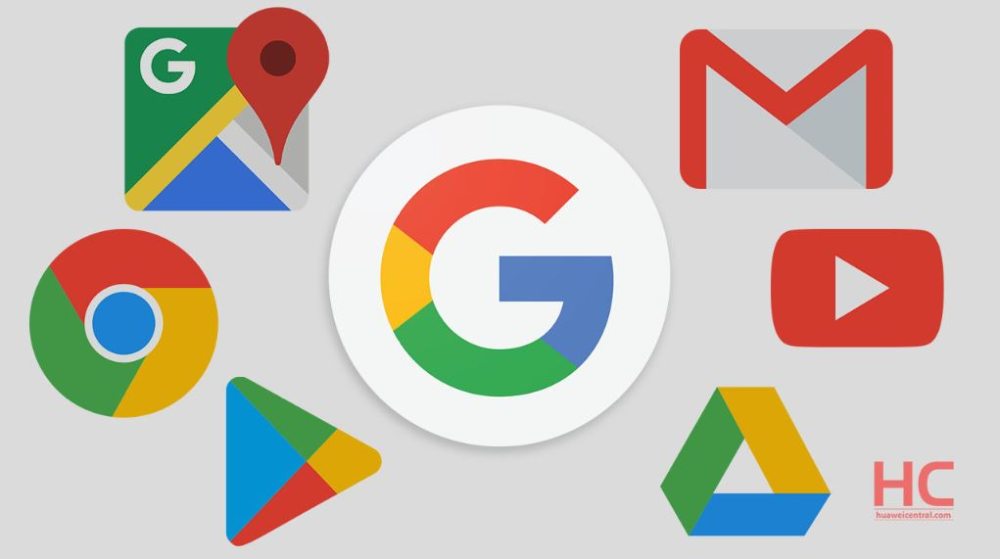

CLOUD COMPUTING
- je nový výpočetní model založený na poskytování služeb a programů uložených na internetových serverech, k nimž mohou uživatelé přistupovat pomocí klientských aplikací (nejčastěji webového prohlížeče) a používat je prakticky odkudkoliv. V případě placených služeb uživatelé neplatí za vlastní software, ale za jeho užití.
VEŘEJNÝ CLOUD
-
je určen pro velký nebo neomezený počet klientů (např. Skype, Seznam), zatímco privátní cloud je k dispozici pro omezený počet zákazníků.
Hybridní cloudy pak kombinují veřejný i privátní přístup, navenek však nabízejí jednotné standardizované rozhraní. Vedle každodenně používaných internetových služeb, jakými jsou internetové vyhledávače (Google, Bing, Seznam), webmail servery (Gmail, Hotmail, Seznam) nebo cloudová úložiště (OneDrive, GoogleDrive, iCloud, Dropbox, Uložto), může být cloud využit pro distribuované výpočty (Cloud Skype), provozování běžných uživatelských aplikací (Google Apps, Microsoft Office365, Adobe Creative Cloud), ale i pro systémy přístupné přes prohlížeče (eyeOS).
DISTRIBUČNÍ MODELY
Podle obsahu i způsobu nabídky cloudové službyrozlišujeme tyto modely:- IaaS (Infrastructure as a Service - infrastruktura jako služba). Poskytovatel služeb nabízí klientům celou infrastrukturu, typicky virtuální stroje. Hlavní výhodoutohoto přístupu je, že se o veškeré problémy s hardwarem stará poskytovatel. Příkladem jsou Amazon EC2, Rackspace Cloud nebo Microsoft Azure.
- PaaS (Platform as a Service - platforma jako služba). V tomto modelu jsou poskytovány kompletní prostředky pro podporu celého životního cyklu tvorby a distribuce webových. Toto řešení, vhodné pro vývojáře, zahrnuje různé prostředky pro vývoj aplikace (IDE, API), ale i pro její údržbu. Příkladem poskytovatelů PaaS jsou Google App Engine, Force.com nebo Heroku.
- SaaS (Software as a Service - software jako služba).
Aplikace je licencována jako služba pronajímaná uživateli a přístupná odkudkoliv a kdykoliv.
Příkladem může být známá sada aplikací Google Apps nebo v logistice známý systém Cargopass.
|

|
| Výhody | Nevýhody |
|---|---|
| Není nutné udržovat SW a HW | Závislost na poskytovateli |
| Efektivní řízení, dostupnost dat | Nutnost připojení k Internetu |
| Jednoduché uživatelské rozhraní | Méně funkcí, horší stabilita |
| Zvýšení zabezpečení dat | Možné zneužití dat |
| Škálovatelnost - možnost okamžitého zvýšení výkonu i paměti |
Náklady na migraci (přechod na novou platformu) - přeškolení, převod dat... |
| Růst produktivity práce ve firmách | Jiný právní řád poskytovatele a klienta |